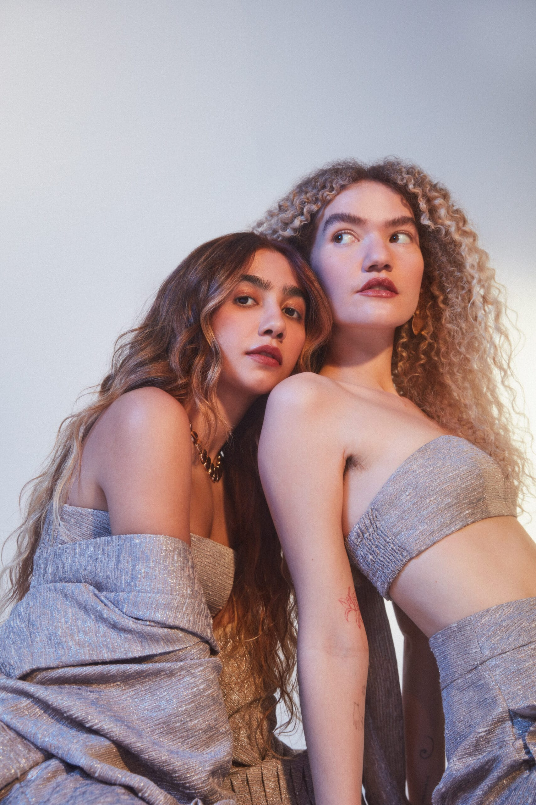

Sobre o duo
Formado por Ana Caetano e Vitória Falcão em Araguaína, Tocantins, o duo Anavitória conquistou o Brasil com suas vozes harmoniosas, letras poéticas e uma sonoridade que mistura o pop com o folk de uma forma única e minimalista.
Recordes e Prêmios (Grammy Latino)
Elas são queridinhas do Grammy Latino! Logo com o álbum de estreia (Anavitória, 2016), elas ganharam o prêmio de Melhor Canção em Língua Portuguesa com o hit "Trevo (Tu)".
Elas já acumulam quatro estatuetas do Grammy Latino na carreira, se consolidando como um dos maiores nomes do pop-folk brasileiro.
Do Palco para as Telas
Filme próprio: Em 2018, elas estrelaram o filme Ana e Vitória, uma comédia musical romântica disponível em streaming. O filme é uma ficção, mas é fortemente baseado na história real de como elas se conheceram e alcançaram a fama.
Estilo Único e Identidade
Sempre descalças: Se você já viu um show delas ou fotos das apresentações, deve ter reparado: a Vitória quase sempre canta descalça. Elas curtem essa vibe mais "pé no chão" e natural no palco. O nome do duo: A junção dos nomes em letras maiúsculas (ANAVITÓRIA) foi uma ideia para soar como uma palavra única, mostrando a conexão e a fusão perfeita das duas vozes e personalidades.
O Álbum Gravado em Segredo
Lançamento surpresa: O terceiro álbum de estúdio delas, O Tempo É Agora (2018), foi gravado em total segredo em Los Angeles, nos Estados Unidos. Ninguém sabia que elas estavam trabalhando em um novo disco até o dia do lançamento, o que pegou os fãs totalmente de surpresa e gerou um enorme barulho na internet.
Parcerias de Peso
Elas são super bem relacionadas na MPB e no pop de transição. Já gravaram colaborações de grande sucesso com artistas como Nando Reis ("N"), Vitor Kley ("Pupila"), Rita Lee ("Amarelo, Azul e Branco") e Sandy ("Pra Me Refazer").
O Fenômeno do "Popzinho"
Elas foram as grandes responsáveis por popularizar o termo "pop-folk" ou "pop leve" no Brasil na última década. O som acústico, focado no violão e na harmonia das duas vozes, abriu portas para toda uma nova geração de artistas brasileiros que seguem essa mesma linha acústica e intimista.
Reconhecimento Internacional
Além dos Grammys, o duo já fez turnês internacionais de sucesso, lotando casas de shows em países como Portugal, Espanha, Inglaterra e Estados Unidos, mostrando que a língua portuguesa e a calmaria das músicas delas quebram barreiras geográficas.
